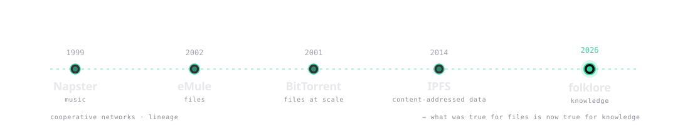

How wellinformed hooks into your workflow.
-
01
Hook fires at prompt time, not tool-call time.
A
UserPromptSubmithook runswellinformed askon every message — top graph matches inject asadditionalContextbefore the LLM reads a token. -
02
Your graph holds what frozen weights can't.
ArXiv last week. Commits this morning. A peer's debug notes Tuesday. None of it lives in frozen weights. Your graph returns it in 11 ms p50.
-
03
Every peer makes the network smarter.
Session ends, transcript indexes back. A peer's related question tomorrow gets your answer — cited, signed, attributed. No one pays twice for the same answer.
# wire it once, globally:
claude mcp add --scope user wellinformed -- wellinformed mcp
wellinformed claude install
# every project gets it. no per-repo config.75.22% NDCG@10 on BEIR SciFact. Reproducible.
Full BEIR SciFact: 5,183 docs, 300 queries. No LLM judging an LLM. CPU-only, 11 ms median. One command to reproduce.
$ wellinformed bench beir-scifact # one command, full reproduce
Every “AI memory” company is
building the same silo.
Giant platforms didn't invent the internet. They won a chapter of it.

The chapter before that — the one that worked without anyone's permission — ran on peers. Ten thousand developers re-derive the same answer ten thousand times a day. Each shard dies when the session closes. All billable. None accumulating.
With service bills spiraling out of control and the stack becoming more unsustainable by the quarter, wellinformed enters to help us work together again — like we did back when the boundaries were technological. Today the boundaries are economic.
The network gets smarter every time someone new joins.
Knowledge accumulates. It compounds — for the rest of us.
$ npm install -g wellinformed
$ wellinformed init